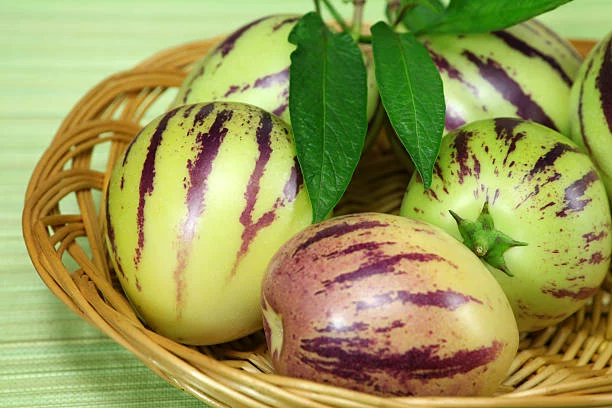

pepino fruits
pepino plant flowers

pepino ripe fruit

The Pepino melon has taken the Kenyan market by storm in very short duration of time and is steadily gaining a lot of recognition and demand. The fruit has a high demand because of its health benefits.
There has been growing interest in the pepino melon especially from the exotic markets which creates an opportunity where one can make good money from. The local market is also growing and demand is increasing day by day hence is a crop that needs a lot of attention. The crop has a very good market in Europe and Japan. The questions people are asking are what is this fruit and why all the hype surrounding it introduction and integration to the Kenyan market?
The Pepino melon (solanum muritacum) is an herbaceous Andean fruit grown mainly for its juicy and aromatic fruits. It has leaves resembling those plants and if left un-pruned grows into a low dense bush and has more a scrambling nature like a determinate tomato. It originated from the South America but can thrive well in tropical climate of Kenya and its soils.
The fruit is typically a bright green or yellow green and often has some red or purple striations. The flesh is golden yellow when ripe with a narrow seed cavity. The melon is entirely edible; skin, flesh and seeds. The fruit is very sweet and juicy.
The pepino has similar requirements to those of tomatoes. There are two methods of propagation used; cuttings and seeds but is usually propagated from cuttings. Germinating seeds require a minimum soil temperature of 12c and unlike some species of tomatoes can survive mild cold snaps. The foliage is likely to be affected by excessive heat and moderate frost. The plant requires well drained loam soils with a pH of 6.5-7.5. The plants should be well watered and weeded. It can be grown in greenhouses.
For potential farmers in Kenya can these melons can be grown from cuttings; this plant is technically a perennial. A spacing of 2-3 ft. between the plants is recommended. Harsh weather can damage the plant. The fruits have a distinctive teardrop shape and a yellow rind. Mature plants reach a height of about 1.2 metres and produces a cluster of purple and white flowers similar to those of the potato.
The fruit tends to grow better over trellis. The fruits are susceptible to pests and diseases which attack tomatoes. Such diseases include bacterial spot, anthracnose and blights. Spider mites, cut worm leaf miner and fruit flies are some of the pests that attack the plant. Pesticides and other methods used to control pests should be used.
Fruits are harvested once they have fully ripened and can be stored for several days. They can be eaten wholly and are also useful in making desserts and as addition to fruit salads.
The pepino melon is referred to as the “magic fruit” in many parts of the world. These nutritional facts will give you a clear picture why it the fruit has such acclaim:
This plant has great potential in the Kenyan market and with proper investment and use of other resources can generate good income. In many countries where the crop has been introduced, it has had a lot of commercial success. People are day by day becoming diet conscious and hence the pepino melon provides an alternative to other fruits. Value addition can also be done to the raw fruits which increases the income obtained from the fruit. If you are looking to invest in the horticulture market why not give this plant a try?